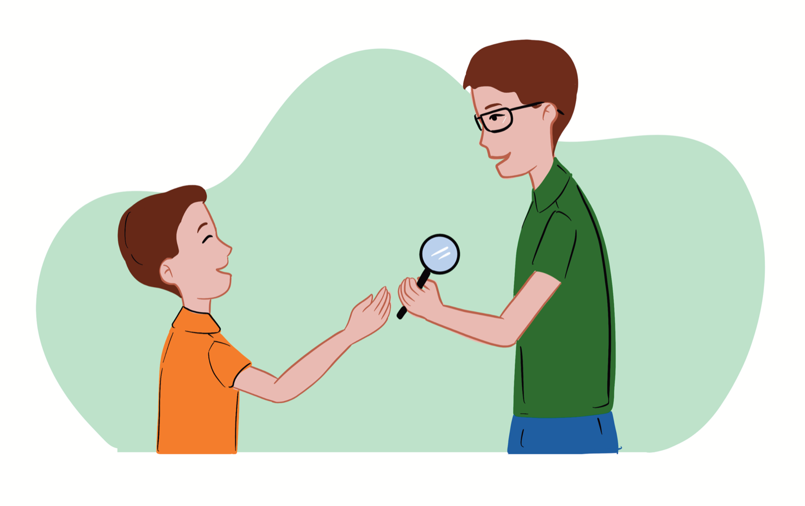

Mirëkuptimi, solidariteti, empatia dhe respekti ndaj të tjerëve
Toleranca dhe miqësia
Situata 1.
Vjosa vazhdonte klasën e katërt, por pasi mësimi ishte online, kishte vështirësi: kishte probleme me shikim dhe nuk i kishte pajisjet e nevojshme për mësim online. Edhe vëllai i shokut të saj të klasës, Shpatit, kishte të njëjtat vështirësi. Sa e admironte Shpati vullnetin e tij për mësime. Ai kishte ditë që nuk e shihte Vjosën në mësim. Ai bisedoi me vëllanë e madh, duke i thënë se, meqenëse prindërit i kishin blerë një pajisje të re për të lexuar, t’ia falte pajisjen e tij të vjetër Vjosës. Ai pranoi me shumë kënaqësi, pasi mendoi se kjo do ta ndihmonte Vjosën që të lexonte, duke qenë se pajisja zmadhonte shkronjat në ekran. Vjosa me siguri do të gëzohej dhe do të ishte falënderuese ndaj Shpatit.
